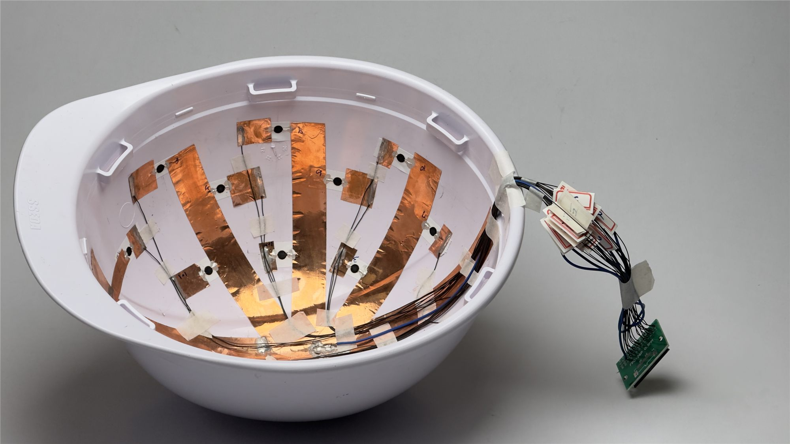
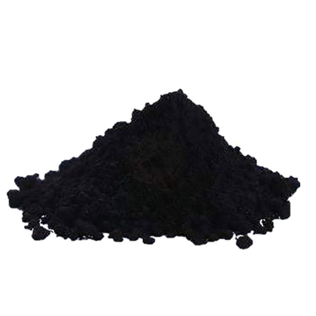
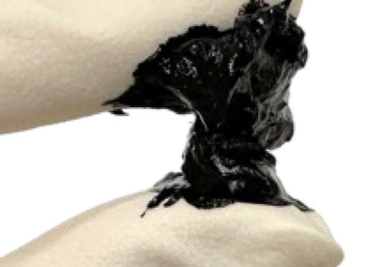
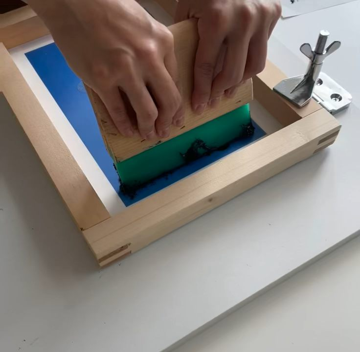
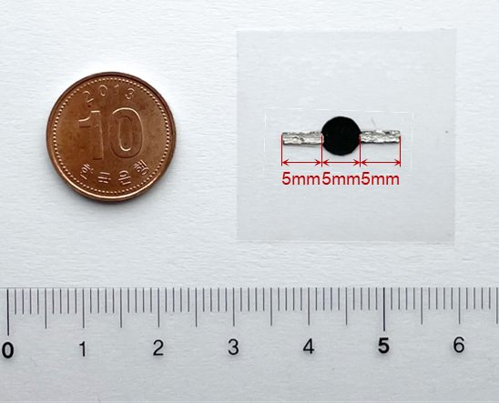
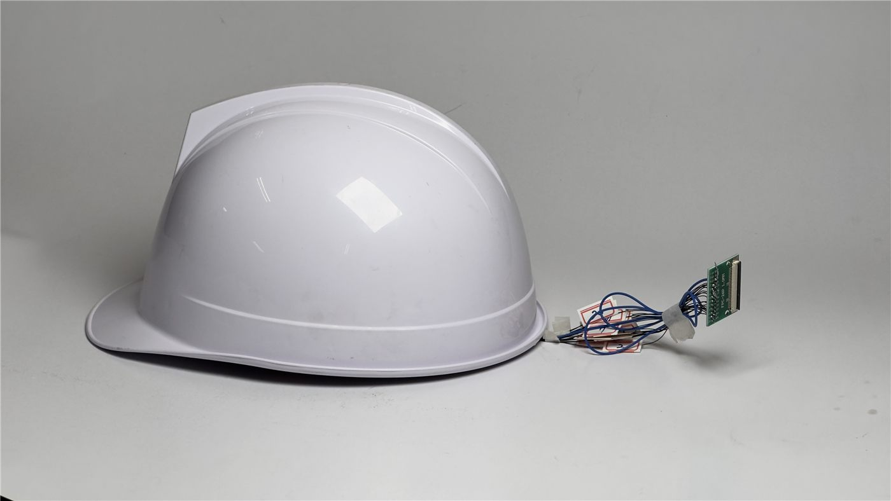

EXPECTED FEBRUARY 20272027년 2월 졸업 예정
M.S. in Smart City Engineering스마트시티공학 석사과정
Hanyang University ERICA한양대학교 ERICA
EXPERIMENTAL SENSING · COMPOSITE MATERIALS
Seeking a funded PhD · 2027 entry2027년 연구비 지원 박사과정 지원 희망
M.S. Candidate · Hanyang University ERICA한양대학교 ERICA · 스마트시티공학과 석사과정
I develop printed CNT/polymer sensors and integrate them into experiments that make impact, temperature and structural response measurable.인쇄형 CNT/고분자 센서를 개발하고 실험·계측 시스템에 통합하여, 충격·온도·구조 응답을 측정하는 연구를 수행합니다.
Ansan, Republic of Korea / Advisor: Prof. Sung-Hwan Jang지도교수: 장승환 교수

Simultaneous impact monitoring동시 충격 모니터링
CNT/epoxy array · Sensors 2026CNT/에폭시 배열 · Sensors 2026ACADEMIC PROFILE
My research connects conductive composite fabrication with experimental sensing and system integration. I work with CNT/epoxy and CNT/polyurethane materials for construction helmets, battery systems and concrete structures.전도성 복합재 제작과 실험 계측, 시스템 통합을 연결합니다. CNT/에폭시와 CNT/폴리우레탄을 활용하여 건설 안전모, 배터리 시스템, 콘크리트 구조물을 연구하고 있습니다.
PHD RESEARCH DIRECTION박사과정 연구 관심
Damage initiation and evolution in composite structures, experimental mechanics and structural health monitoring.복합재 구조의 손상 발생과 진전, 실험역학, 구조건전성 모니터링.
Hanyang University ERICA한양대학교 ERICA
Hanyang University ERICA한양대학교 ERICA
Advanced Structure Engineering · Multi-Functional Construction Materials · Smart Structure Maintenance · Introduction to Aerospace Engineering고급구조공학 · 다기능 건설재료 · 스마트 구조물 유지관리 · 항공우주공학 입문
RESEARCH EXPERIENCE
Graduate Researcher · Department of Smart City Engineering
Hanyang University ERICA · March 2024–present대학원 연구원 · 한양대학교 ERICA 스마트시티공학과
2024년 3월–현재
A screen-printed CNT/epoxy array turns a construction safety helmet into a multichannel experimental sensing system.건설용 안전모에 스크린 인쇄 CNT/에폭시 배열을 부착하여 다채널 충격 계측 시스템을 구현했습니다.
Ink formulation, sensor fabrication, electrical and impact testing, and sensor integration. Multichannel readout software was co-developed.잉크 배합, 센서 제작, 전기적 특성·충격 시험 및 센서 통합. 다채널 계측 소프트웨어는 공동 개발했습니다.
Read the paper논문 보기Crown impacts detected
0.2–4.0 J · three arrays정수리 충격 검출
0.2–4.0 J · 독립 제작 배열 3개
Median angular deviation
90 off-crown impacts각도 편차 중앙값
정수리 외 충격 90회
Array + electrodes
Wiring & readout excluded배열 + 전극 질량
배선·계측 회로 제외
DESIGN & EXPERIMENTAL RESULTS설계 및 실험 결과
| Selected design최종 선정 설계 | 5.0 wt.% CNT/epoxy, 10 mm sensing discs and a 19-channel array.CNT 5.0 wt.%의 CNT/에폭시, 직경 10 mm 감지부, 19채널 배열. |
|---|---|
| Crown-impact detection정수리 충격 검출 | 240 of 240 impacts detected across three independently fabricated arrays at nominal energies of 0.2–4.0 J.독립 제작한 3개 배열에서 공칭 에너지 0.2–4.0 J의 정수리 충격 240회를 모두 검출. |
| Regional localization충격 발생 영역 추정 | Median angular deviation of 6.2° over 90 impacts at three off-crown positions.정수리 외 3개 위치에서 시행한 충격 90회의 각도 편차 중앙값 6.2°. |
| Array mass센서 배열 질량 | Below 1 g including the electrodes, excluding the wiring harness and readout board.전극을 포함한 배열 질량 1 g 미만. 배선 하네스와 계측 회로 기판은 제외. |
| Attachment부착 방식 | Printed on an adhesive label sheet and attached to the inner ABS shell.접착식 라벨 시트에 인쇄한 뒤 ABS 안전모 외피의 안쪽에 부착. |
| Validation scope검증 범위 | Low-energy impact monitoring. Long-term stability and protective performance after integration require further assessment.저에너지 충격 모니터링을 평가함. 장기 안정성과 센서 통합 후 안전모 보호성능은 추가 평가가 필요함. |
CNT/epoxy patch sensors detect impacts on an EV battery enclosure. Ongoing work extends printed sensing to cell-surface temperature monitoring.CNT/에폭시 패치 센서로 전기차 배터리 인클로저의 충격을 감지했습니다. 현재는 셀 표면 온도 모니터링을 위한 인쇄 센서 시트로 연구를 확장하고 있습니다.
Sensor fabrication and evaluation, enclosure integration, and coordination of CNT sensor integration within a UK–Korea battery-monitoring collaboration.센서 제작·평가와 인클로저 통합, 한영 배터리 모니터링 공동연구의 CNT 센서 통합 활동 조정.
View IWSHM paperIWSHM 논문 보기Drop impacts detected
on an instrumented enclosure센서가 부착된 인클로저에서
낙하 충격 검출
ONGOING / THERMAL MONITORING진행 중 / 온도 모니터링
RESEARCH SUMMARY연구 요약
| Sensor format센서 형식 | Screen-printed CNT/epoxy patches on a battery enclosure.배터리 인클로저에 부착한 스크린 인쇄 CNT/에폭시 패치 센서. |
|---|---|
| Fabrication study제작 조건 검토 | Electrical conductivity examined against CNT loading and the number of print passes.CNT 함량과 인쇄 횟수에 따른 전기전도도 변화 검토. |
| Impact range충격 시험 범위 | Enclosure-mounted sensors detected drop impacts of 0.2–0.8 J.인클로저에 부착한 센서로 0.2–0.8 J의 낙하 충격을 검출. |
| Position indication충격 위치 표시 | A spatial map of resistance changes indicated the impact location on the enclosure.공간적 저항 변화 분포를 통해 인클로저의 충격 위치를 표시. |
| Ongoing thermal sensing진행 중인 온도 감지 연구 | Five-point CNT sensor sheets with integrated FFCs are under development for cell-surface temperature monitoring.셀 표면 온도 모니터링을 위한 FFC 일체형 5점 CNT 센서 시트를 개발 중임. |
| Validation scope검증 범위 | The reported impact results concern enclosure tests. Thermal sensor-sheet development is a separate ongoing activity.제시한 충격 성능은 인클로저 시험 결과임. 온도 센서 시트는 별도로 진행 중인 개발 항목임. |
Embedded CNT-reinforced polymer bars and CNT/epoxy coatings reveal crack initiation through a change in electrical resistance.콘크리트에 매립한 CNT 보강 고분자 봉과 CNT/에폭시 코팅의 저항 변화를 통해 균열 발생을 감지했습니다.
CNRP bar and coating fabrication, three-point bending tests with in-situ resistance monitoring, and leadership of a WISET student research team.CNRP 봉·코팅 제작, 저항 동시 계측을 포함한 3점 휨 시험, WISET 학생 연구팀 책임자 수행.
MECHANICAL RESPONSE × ELECTRICAL RESPONSE역학적 응답 × 전기적 응답
| Sensing elements감지 요소 | Embedded CNT-reinforced polymer (CNRP) bars and CNT/epoxy coatings.매립형 CNT 보강 고분자(CNRP) 봉과 CNT/에폭시 코팅. |
|---|---|
| Mechanical test역학 시험 | Three-point bending of concrete beams with simultaneous resistance monitoring.저항을 동시에 계측하며 콘크리트 보의 3점 휨 시험 수행. |
| Before cracking균열 발생 전 | The resistance of embedded CNRP bars decreased during pre-crack bending.균열 발생 전 휨 하중 구간에서 매립형 CNRP 봉의 저항이 감소. |
| At crack initiation균열 발생 시 | Both embedded bars and coatings indicated crack initiation through a sharp resistance increase.매립형 봉과 코팅 모두 저항의 급격한 증가로 균열 발생을 감지. |
| Related field work관련 현장 연구 | Domestic bridge tests of CNT patch sensors and a pre-deployment bridge survey with AECOM in Baltimore in 2025.CNT 패치 센서의 국내 교량 현장 시험과 2025년 볼티모어에서 AECOM과 함께한 적용 전 교량 현장 조사. |
| Evidence scope제시된 결과의 범위 | Crack-onset indication in bending tests. Crack-width and remaining-life quantification are outside the results shown.휨 시험 중 균열 발생 감지를 보여줌. 제시된 결과에는 균열 폭이나 잔존수명의 정량 평가가 포함되지 않음. |
RELATED EXPERIMENTS
Field trial of conductive repair materials. Related work contributes to the DRIFT EUREKA Network project.전도성 보수 재료의 현장 시험. 관련 연구는 DRIFT EUREKA Network 과제의 일부로 수행됩니다.
FUNDED PROJECTS
Dates below are official project periods; they do not represent individual participation periods.아래 기간은 공식 과제 기간이며 개인의 참여 기간을 의미하지 않습니다.
| Project period과제 기간 | Project & contribution과제 및 수행 내용 | Role / funding body역할 / 지원기관 |
|---|---|---|
| Jul 2025 – Jun 2027 | DRIFT: Disaster Reconnaissance & Intelligent Forecasting TechnologyDRIFT: 재난 조사 및 지능형 예측 기술 CNT/epoxy composite-based conductive repair materials for resilient infrastructure monitoring.인프라 모니터링을 위한 CNT/에폭시 복합재 기반 전도성 보수 재료 연구. | Student Researcher학생연구원 |
| Jul 2024 – Mar 2027 | Development of a Flexible Modular AI-based Battery and Monitoring System for Urban Transportation유연 모듈형 AI 기반 배터리 및 모니터링 시스템 Korea–UK consortium; printed CNT/epoxy impact sensors for battery enclosures, inter-cell monitoring sensor sheets and thermal sensor sheets.한영 공동연구에서 배터리 외함용 인쇄형 CNT/에폭시 충격 센서, 셀 사이 모니터링 시트 및 온도 센서 시트를 연구. | Project Coordinator과제 조정·연구 활동 담당 |
| Apr 2024 – Oct 2024 | Development of a Carbon Nanotube-Based Self-Sensing Rod for Safety Monitoring of Concrete Structures콘크리트 안전 모니터링용 CNT 기반 자가감지 봉 Student research team grant (2024 Women Graduate Student Engineering Research Team Support Project, Advanced Course), 8,000,000 KRW. Led a team of three undergraduate students working on CNRP bars and CNT/epoxy coatings for concrete; the team received the Excellence Award at the program’s 2024 presentation competition (Korean Society of Civil Engineers).학생 연구팀 지원금 800만 원. 학부생 3명으로 구성된 팀을 이끌고 콘크리트용 CNRP 보강봉과 CNT/에폭시 코팅을 연구했으며, 2024년 사업 성과발표대회(대한토목학회)에서 우수상을 수상. | Student Principal Investigator학생 연구책임자 |
| Jun 2023 – Dec 2027 | Structural Health Monitoring System Using Scalable Carbon Nanotube Sensors대규모 적용 CNT 센서 기반 구조건전성 모니터링 Korea–US project with AECOM; domestic bridge field tests of scalable CNT patch sensors; pre-deployment site survey of a bridge in Baltimore, MD, with AECOM (August 2025).AECOM과의 한미 과제. 국내 교량에서 대규모 적용 CNT 패치 센서의 현장 시험을 수행하고, 2025년 8월 AECOM과 미국 메릴랜드주 볼티모어 교량의 설치 전 현장 조사를 진행. | Student Researcher학생연구원 |
| Apr 2021 – Dec 2024 | Development of a Smart Monitoring System Integrating 3D-Printed Battery-Free Antenna Sensor Technology with AI Optimization3D 프린팅 무전원 안테나 센서·AI 통합 모니터링 Contributed to studies on extrusion-based 3D printing of CNT/polyurethane composite sensors (co-author, CAMX 2024).CNT/폴리우레탄 복합재 센서의 압출 기반 3D 프린팅 연구에 참여(CAMX 2024 공저자). | Student Researcher학생연구원 |
| Mar 2020 – Feb 2024 | Development of an Intelligent Construction Materials System for Multi-Sensing and Self-Heating in Extreme Environments극한환경 다중 감지·자가발열 지능형 건설재료 CNT/polyurethane and CNT/epoxy composites for IoT-based structural monitoring and extreme-environment applications.IoT 기반 구조 모니터링 및 극한환경 적용을 위한 CNT/폴리우레탄·CNT/에폭시 복합재 연구. | Student Researcher학생연구원 |
PUBLICATIONS
Sensors 2026, 26(20), 6557
Read full article논문 전문 보기Bold author name denotes Ga-Hyeon Eom; * denotes the corresponding author. Manuscript status is listed separately from published work.굵은 저자명은 엄가현, *는 교신저자를 뜻합니다. 투고·수정 중 원고와 게재 논문의 상태를 구분했습니다.
| Year / status연도 / 상태 | Publication논문 | Links링크 |
|---|---|---|
| 2026 Published게재 | A Screen-Printed Carbon Nanotube/Epoxy Array for Impact Monitoring in Construction Safety Helmets 건설 안전모 충격 모니터링용 스크린 프린팅 CNT/에폭시 어레이 Sensors 2026, 26(20), 6557. Published 16 October 2026. | DOI Scholar |
| 2026 Submitted투고 | Optimizing Electromagnetic Induction Heating and Rapid De-Icing Properties of Ultra-High Performance Concrete: From Multiscale Fillers to Induction Condition 초고성능 콘크리트의 전자기 유도 가열 및 급속 제빙 특성 Applied Thermal Engineering, submitted September 2026 | — |
| 2026 Under revision수정 심사 중 | Structurally Gated Multilayer Hybrid Architecture for Programmable Mechanochromic Sensing 프로그래밍 가능한 기계적 변색 센싱용 다층 하이브리드 구조 Advanced Composites and Hybrid Materials, revision submitted September 2026 | — |
| 2026 Proceedings forthcoming논문집 발간 예정 | Development of a Rapid-Curing CNT-Epoxy Composite with Recycled Concrete Aggregate for Structural Repair 구조 보수용 재생골재 기반 속경화 CNT/에폭시 복합재 17th International Symposium on Fiber-Reinforced Polymer (FRP) Reinforcement for Concrete Structures (FRPRCS17), Girona, Spain, 2026 (proceedings forthcoming) | — |
| 2025 Conference paper학회 논문 | Screen-Printed Carbon Nanotube Polymer Composites for Impact Sensing in Electric Vehicle Batteries 전기차 배터리 충격 감지용 스크린 프린팅 CNT 고분자 복합재 15th International Workshop on Structural Health Monitoring (IWSHM 2025), Stanford, CA, USA, pp. 1612–1618, 2025 | DOI Scholar |
| 2025 Conference paper학회 논문 | Performance Evaluation of Structural Behavior Monitoring Using Smart Sensors 스마트 센서 기반 구조 거동 모니터링 성능 평가 24th International Conference on Composite Materials (ICCM24), Baltimore, MD, USA, 2025 | DOI Scholar |
| 2024 Conference paper학회 논문 | Characterization of the 3D-Printed Carbon Nanotube/Polyurethane Composite with Structural Health Monitoring Capabilities 구조건전성 모니터링 기능을 갖춘 3D 프린팅 CNT/폴리우레탄 복합재 Composites and Advanced Materials Expo (CAMX 2024), San Diego, CA, USA, 2024 | DOI Scholar |
| 2024 Conference paper학회 논문 | Characterization of Carbon Nanotube-Polyurethane Sheet Using Screen Printing Technology for Compression and Impact Sensing 압축·충격 감지용 스크린 프린팅 CNT/폴리우레탄 시트 Society for the Advancement of Material and Process Engineering 2024 (SAMPE 2024), Long Beach, CA, USA, 2024 | DOI Scholar |
No matching publications.검색 결과가 없습니다.
METHODS & TECHNICAL EXPERIENCE
Representative steps for printed CNT/polymer sensors. Substrates and sensing geometries depend on the application.스크린 인쇄 CNT/고분자 센서의 대표적인 제작 과정. 기판과 감지부 형상은 적용 대상에 따라 달라짐.

01Multi-walled carbon nanotubes provide the conductive filler.다중벽 탄소나노튜브를 전도성 충전재로 사용.

02CNT dispersion in epoxy using probe sonication and three-roll milling.프로브 초음파와 3롤 밀링을 이용한 CNT의 에폭시 내 분산.

03The substrate is selected for the application. Adhesive label sheets were used in the reported helmet and enclosure impact-sensing studies.적용 대상에 따라 기판을 선택함. 보고된 안전모 및 인클로저 충격 감지 연구에는 접착식 라벨 시트를 사용함.

04A 5 mm disc with silver-paint electrodes is shown for scale. The final helmet array used 10 mm discs.크기 비교를 위해 은 페인트 전극을 갖춘 직경 5 mm 감지부 예시를 제시함. 최종 안전모 배열에는 10 mm 감지부를 사용함.

05Printed sensors are integrated with the target structure and connected for electrical monitoring.인쇄 센서를 대상 구조물에 통합하고 전기적 모니터링을 위한 배선을 연결함.
MWCNT dispersion in epoxy and polyurethane; conductive inks, coatings and repair materials.CNT의 에폭시·폴리우레탄 내 분산, 전도성 잉크·코팅·보수 재료.
Probe sonication, three-roll milling, screen printing, silver-paint electrodes and molded CNRP bars.프로브 초음파, 3롤 밀링, 스크린 인쇄, 은 페인트 전극, CNRP 봉 성형.
Keithley 2450 resistance and conductivity measurement; percolation analysis; drop impacts; three-point bending with in-situ resistance monitoring; temperature/humidity exposure.Keithley 2450을 이용한 저항·전도도 측정, 퍼콜레이션 분석, 낙하 충격, 저항 동시 계측 3점 휨 시험, 온·습도 노출 시험.
Multichannel resistance acquisition and threshold-based event detection (co-developed); OriginPro and Python scripting for data analysis.다채널 저항 계측·임계값 기반 이벤트 검출 공동 개발, OriginPro·Python 스크립트를 활용한 데이터 분석.
CNT sensor integration in a UK–Korea project; student-team leadership in the WISET programme.한영 과제의 CNT 센서 통합 활동 조정, WISET 학생 연구팀 운영.
Korean (native); eight English-taught graduate courses, 24 credits.한국어 모국어, 영어 강의 대학원 교과목 8개·24학점 이수.
HONORS & AWARDS
Co-author · Korean Society for Advanced Composite Structures (KOSACS) Conference한국복합신소재구조학회(KOSACS) 학술대회 · 공저자
Participating graduate student evaluation, BK21 Smart City Research Group, Hanyang UniversityBK21 스마트시티연구단 참여 대학원생 평가 · 최상위 등급
Co-author · KOSACS Conference한국복합신소재구조학회(KOSACS) 학술대회 · 공저자
First author, Special Session · Korea Institute for Structural Maintenance and Inspection (KSMI) Spring Conference한국구조물진단유지관리공학회(KSMI) 봄 학술대회 · 특별세션 제1저자
Participating graduate student evaluation, BK21 Smart City Research Group, Hanyang UniversityBK21 스마트시티연구단 참여 대학원생 평가 · 최상위 등급
Principal investigator · Women Graduate Student Engineering Research Team Support Project presentation competition, Korean Society of Civil Engineers (KSCE)WISET 여성 대학원생 공학연구팀 지원사업 성과발표 · 대한토목학회 · 학생 연구책임자
Co-author · KSMI Fall Conference (conferred April 2025)KSMI 가을 학술대회 · 공저자 · 2025년 4월 수여
Co-author · KOSACS Conference한국복합신소재구조학회(KOSACS) 학술대회 · 공저자
First author · KSMI Spring ConferenceKSMI 봄 학술대회 · 제1저자
INTELLECTUAL PROPERTY
5Registered등록
13Pending applications출원 중
Republic of Korea · Co-inventor대한민국 · 공동발명자| Number / date번호 / 날짜 | Patent / inventors특허 / 발명자 | Status상태 |
|---|---|---|
| 10-2959099 | Reinforcing bar based on carbon nanotube, apparatus and system of monitoring of structure using the same and method thereof CNT 기반 보강봉과 구조물 모니터링 장치·시스템·방법 | Registered등록 |
| 10-2959485 | Concrete internal temperature detection system using carbon nanotube sensor CNT 센서를 이용한 콘크리트 내부 온도 감지 시스템 | Registered등록 |
| 10-2909450 | Concrete load detection system utilizing carbon nanotube sensor CNT 센서를 활용한 콘크리트 하중 감지 시스템 | Registered등록 |
| 10-2881472 | Carbon nanotube-based wood adhesive composition and manufacturing method thereof CNT 기반 목재 접착제 조성물 및 제조 방법 | Registered등록 |
| 10-2849694 | Bag including carbon nanotube sheet and method for measuring load of inside of the bag using the same CNT 시트를 포함하는 가방과 내부 하중 측정 방법 | Registered등록 |
| 10-2026-0151526 | Battery cell fixing bracket having temperature sensing function and battery pack including the same 온도 감지 기능을 갖는 배터리 셀 고정 브래킷과 배터리 팩 | Pending application출원 중 |
| 10-2026-0080950 | Roof snow removal panel and roof snow removal system having the same 지붕 제설 패널과 제설 시스템 | Pending application출원 중 |
| 10-2026-0057536 | Inter-cell insertion type battery monitoring sensor, method for manufacturing the same, and battery management system using the same 셀 사이 삽입형 배터리 모니터링 센서·제조 방법·관리 시스템 | Pending application출원 중 |
| 10-2025-0005589 | Impact detection system and method for manufacturing sensors embedded in carbon nanotube-based battery enclosure CNT 기반 배터리 외함 내장 센서의 제조 방법과 충격 감지 시스템 | Pending application출원 중 |
| 10-2025-0005588 | Flame detection system and method for manufacturing sensors embedded in carbon nanotube-based battery enclosure CNT 기반 배터리 외함 내장 센서의 제조 방법과 화염 감지 시스템 | Pending application출원 중 |
| 10-2024-0181332 | Shock-sensing packaging material using carbon nanotubes CNT를 이용한 충격 감지 포장재 | Pending application출원 중 |
| 10-2024-0160962 | Railway elastic pad for energy harvester using carbon nanotubes CNT를 이용한 에너지 하베스터용 철도 탄성 패드 | Pending application출원 중 |
| 10-2024-0160961 | Rail sensing pad for detecting railway operation abnormality using carbon nanotubes and railway operation abnormal behavior detection system including the same CNT 기반 철도 이상운행 감지용 레일 센싱 패드와 시스템 | Pending application출원 중 |
| 10-2024-0160960 | Strain sensing sheet for detecting deformation of railway using carbon nanotube and deformation of railway detection system including the same CNT 기반 철도 변형 감지 시트와 시스템 | Pending application출원 중 |
| 10-2024-0033809 | Apparatus and method for monitoring of constructed structure based on carbon nanotube CNT 기반 건설 구조물 모니터링 장치 및 방법 inventors as filed | Pending application출원 중 |
| 10-2024-0020895 | Apparatus and method for monitoring of load status using carbon nanotube sensor CNT 센서를 이용한 하중 상태 모니터링 장치 및 방법 inventors as filed | Pending application출원 중 |
| 10-2024-0017253 | Method of detecting for deformation regarding carbon nanotube reinforcement bar or structure using the same and system thereof CNT 보강봉 또는 이를 이용한 구조물의 변형 감지 방법과 시스템 inventors as filed | Pending application출원 중 |
| 10-2023-0127158 | Deformation detection device for tunnel lining concrete structures 터널 라이닝 콘크리트 구조물의 변형 감지 장치 inventors per the university patent record | Pending application출원 중 |
No matching patents.검색 결과가 없습니다.
CONFERENCE CONTRIBUTIONS
9 international + 34 domestic contributions · 15 first-authored. Authorship is shown; presenter and presentation format are not inferred.국제 9건 + 국내 34건 · 제1저자 15건. 저자 기여를 표시하며, 실제 발표자나 발표 형식을 임의로 추정하지 않았습니다.
| Year / group연도 / 구분 | Contribution학술대회 기여 | Authorship저자 역할 |
|---|---|---|
| 2026 | Development of a Rapid-Curing CNT-Epoxy Composite with Recycled Concrete Aggregate for Structural Repair FRPRCS17, Girona, Spain, 2026 | Co-author공저자 |
| 2026 | Embedded CNRP Bars for Real-Time Structural Health Monitoring of Concrete Structures Engineering Mechanics Institute Conference 2026 (EMI 2026), Boulder, CO, USA | |
| 2026 | Self-Sensing CNT/Epoxy Concrete for Rapid Pothole Repair and Post Repair Monitoring EMI 2026, Boulder, CO, USA | Co-author공저자 |
| 2025 | Performance Evaluation of Structural Behavior Monitoring Using Smart Sensors ICCM24, Baltimore, MD, USA, 2025 | Co-author공저자 |
| 2025 | Safety Monitoring of Concrete Structures Using Carbon Nanotube Reinforced Polymer Bars EMI 2025, Anaheim, CA, USA | |
| 2025 | Development of Conductive Repair Materials with Self-Sensing Functionality for Pothole Maintenance EMI 2025, Anaheim, CA, USA | Co-author공저자 |
| 2024 | Evaluating Carbon Nanotube Smart Sensors for Crack Monitoring in Concrete Structures: Bridge Field Test American Concrete Institute (ACI) Concrete Convention – Fall 2024, Philadelphia, PA, USA | Co-author공저자 |
| 2024 | Self-Sensing Cementitious Composite Using Carbon Nanotubes EMI/PMC 2024, Chicago, IL, USA | Co-author공저자 |
| 2024 | Characterization of Carbon Nanotube-Polyurethane Sheet Using Screen Printing Technology for Compression and Impact Sensing SAMPE 2024, Long Beach, CA, USA | Co-author공저자 |
| 2026 | A Screen-Printed CNT/Epoxy Piezoresistive Sensor Array for Low-Energy Impact Monitoring in Construction Safety Helmets KSMI 2026 Fall Conference, Jeju | |
| 2026 | Development of a Screen-Printed CNT/Epoxy Composite Temperature Sensor Sheet for Battery Thermal Monitoring KOSACS 2026 Conference, Jeju | |
| 2026 | Development of a Carbon Nanotube Based Sensor for Monitoring Concrete Filling State KOSACS 2026 Conference, Jeju | Co-author공저자 |
| 2026 | Development of a Rapid Curing Self-Sensing Repair Material Based on CNT/Epoxy Composites KOSACS 2026 Conference, Jeju | Co-author공저자 |
| 2026 | Development and Performance Evaluation of a Carbon Nanotube Composite-Based Embedded Impact Sensor for Safety Helmets KSMI 2026 Spring Conference, Busan | |
| 2026 | Development of a Self-Sensing Rapid Repair Material Based on Carbon Nanotube Polymer Composites KSMI 2026 Spring Conference, Busan | Co-author공저자 |
| 2026 | A Multi-Parameter Numerical Study on Concrete Void Detection Using CNT Piezoresistive Sensors KSMI 2026 Spring Conference, Busan | Co-author공저자 |
| 2026 | Field Monitoring and Performance Evaluation of Levees Using Smart Sensors KSMI 2026 Spring Conference, Busan | Co-author공저자 |
| 2025 | Development of Carbon Nanotube-Based Sensors for Real-Time Impact Monitoring in Smart Helmets KSCM 2025 Fall Conference, Seoul | |
| 2025 | Carbon Nanotube Composite-Based Formwork-Attached Sensor for Concrete Casting Monitoring KSCM 2025 Fall Conference, Seoul | Co-author공저자 |
| 2025 | Development of a Carbon Nanotube-Based Sensor for Helmet Impact Monitoring KSMI 2025 Fall Conference, Gwangju | |
| 2025 | Monitoring of Concrete Placement Using Carbon Nanotube/Polymer Composite-Based Sensors KSMI 2025 Fall Conference, Gwangju | Co-author공저자 |
| 2025 | Development and Performance Analysis of a Levee Monitoring Sensor Using Carbon Nanotubes KSMI 2025 Fall Conference, Gwangju | Co-author공저자 |
| 2025 | Development of a Carbon Nanotube-Based Impact Sensor for Battery Safety Monitoring KSCM 2025 Spring Conference, Jeju | |
| 2025 | Safety Monitoring of Concrete Structures Using Carbon Nanotube Reinforced Polymer Bars KOSACS 2025 Conference, Jeonju | |
| 2025 | Environmental Durability Analysis and Monitoring Performance Evaluation of Smart Sensors KOSACS 2025 Conference, Jeonju | Co-author공저자 |
| 2025 | Development of Embedded Carbon Nanotube-Based Sensors for Structural Health Monitoring KSMI 2025 Spring Conference, Jeju | |
| 2025 | Evaluation of Ultraviolet Aging Effects on Carbon Nanotube Polymer Composite Sensors KSMI 2025 Spring Conference, Jeju | Co-author공저자 |
| 2025 | Development of a Levee Monitoring System Using Smart Sensors KSMI 2025 Spring Conference, Jeju | Co-author공저자 |
| 2024 | Development of Smart Repair Materials for Structural Health Monitoring KCI 2024 Fall Conference, Goseong | |
| 2024 | Development of Carbon Nanotube/Epoxy Coating on Concrete for Structural Health Monitoring KSCE 2024 Convention, Jeju | |
| 2024 | Detection of Concrete Structure Damage Using Carbon Nanotube-Based Smart Sensors KSCE 2024 Convention, Jeju | Co-author공저자 |
| 2024 | Development of Carbon Nanotube-Based Temperature Sensors Using Screen Printing KSMI 2024 Fall Conference, Busan | |
| 2024 | Analysis of Sensing Characteristics of CNT/PU Composites under Multiple Physical Stimuli KSMI 2024 Fall Conference, Busan | Co-author공저자 |
| 2024 | Development of a Concrete-Embedded Sensor Using Carbon Nanotubes KOSACS 2024 Conference, Jeju | |
| 2024 | Development of a Load Sensing System Based on Carbon Nanotube/Polyurethane Composites KOSACS 2024 Conference, Jeju | Co-author공저자 |
| 2024 | Behavior Evaluation of Structural Repair Areas Using Polymer Concrete Based on Carbon Nanotubes KOSACS 2024 Conference, Jeju | Co-author공저자 |
| 2024 | Behavioral Evaluation of Concrete Structures Using CNRP Bar KSMI 2024 Spring Conference, Jeju | |
| 2024 | Performance Evaluation of Smart Repair Materials for Monitoring Repair Areas KSMI 2024 Spring Conference, Jeju | Co-author공저자 |
| 2024 | Development of Smart Monitoring System Utilizing Carbon Nanotube/Polyurethane Composites KSMI 2024 Spring Conference, Jeju | Co-author공저자 |
| 2023 | Characteristics of the Ice Detection and Removal System Based on Carbon Nanotubes KSMI 2023 Fall Conference, Yangyang | Co-author공저자 |
| 2022 | Development of Electronic Skin and Its Application to Concrete Structural Load Monitoring KCI 2022 Spring Conference, Jeju | Co-author공저자 |
| 2022 | Development of a Carbon Nanotube-Based Composite for Temperature Sensing of Mechanical Structures KSMI 2022 Spring Conference, Gwangju | Co-author공저자 |
| 2022 | Performance Evaluation of E-Skin for Structural Deformation Detection KOSHAM 2022 Conference, Seoul | Co-author공저자 |
No matching contributions.검색 결과가 없습니다.
INTERNATIONAL EXPERIENCE
TECHNOLOGY EXHIBITION기술 전시
Exhibitor team member at the Hanyang University pavilion, Eureka Park, Venetian Expo. Presented the laboratory’s CNT/polymer sensor technologies, including printed battery-monitoring sensors.Venetian Expo의 Eureka Park 한양대학교 전시관에서 전시팀 구성원으로 참여했습니다. 인쇄형 배터리 모니터링 센서 등 연구실의 CNT/고분자 센서 기술을 소개했습니다.
BALTIMORE · NEW YORK
Hanyang University ERICA Graduate School Innovation Support Programme. ICCM24 participation, a technical meeting and pre-deployment bridge site survey with AECOM, and a visit to Prof. Huiming Yin’s laboratory at Columbia University.한양대학교 ERICA 대학원혁신지원사업 해외 연수. ICCM24 참여, AECOM과의 기술 미팅 및 교량 센서 적용 전 현장 조사, 컬럼비아대학교 Huiming Yin 교수 연구실 방문.
NEXT CHAPTER / 2027
I am seeking a funded PhD opportunity in composite damage, experimental mechanics and structural health monitoring.복합재 손상, 실험역학, 구조건전성 모니터링 분야에서 2027년에 시작하는 연구비 지원 박사과정 기회를 찾고 있습니다.
EMAIL이메일
eomgh0316@hanyang.ac.krDepartment of Smart City Engineering
Hanyang University ERICA
Ansan, Republic of Korea한양대학교 ERICA 스마트시티공학과
대한민국 경기도 안산시